7 Graphiken mit ggplot2

Artwork by Allison Horst
7.1 Exkurs: Warum viridis?
Das viridis Paket in R stellt eine Reihe an Colormaps bereit, die folgenden Anspruch an sich stellen:
- gute Lesbarkeit und Unterscheidbarkeit in Graphiken
- auch bei Farbenblindheit oder Farbsehschwäche
- bleibt bei Grauskala(-druck) erhalten
Praktisch bedeutet das, die Farbkarten sind:
- farbenfroh: sie umspannen weite Teile der Farbpalette damit Unterschiede einfach zu erkennen sind
- einheitlich: Punkte nah beieinander haben ähnliche Farben und Punkte weit auseinander stark unterschiedliche Farben - und das möglichst konsistent über den gesamten Farbraum hinweg
\(\rightarrow\) ein fester Abstand wird also an verschiedenen Stellen im Farbraum als perzeptuell gleich wahrgenommen, d.h. keine mal schnellen mal langsamen Farbton- oder Helligkeitsänderungen
Gerade die Einheitlichkeit ist wichtig, sie sorgt dafür, dass keine Gebiete überbetont werden, während Kontrast an anderen Strellen nicht gegeben ist. Hier die viridis Farbskala oben und jet (langjährig die Standardfarben in Matlab) unten:
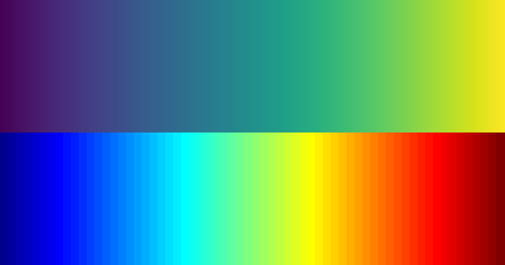
Bei jet stechen besonders Gelb und Türkis heraus - in einer Graphik gibt das Artefakte durch die Darstellung, weil unauffällige Daten durch die Farbwahl auf einmal außergewöhnlich wirken. Außerdem werden an anderen Stellen Unterschiede in den Daten dadurch unterschlagen, dass in weiten Teilen des roten und blauen Spektrums in jet fast keine Farbstufen enthalten sind. viridis versucht dieses Problem zu beheben und wirkt homogen - ohne “Spitzen und Täler”.
Zusätzlich muss berücksichtigt werden, dass Graphiken auch bei Grauskaladruck noch interpretierbar bleiben. Das macht eine Grauskala aus viridis und jet:
Bei der oberen viridis Skala vermindert sich die Interpretierbarkeit nur minimal, während man bei der unteren Skala nicht mehr zwischen hohen und niedrigen Werten unterscheiden kann. Tatsächlich wirkt es so, als ob die mittleren Bereiche besonders auffällig wären - Bereiche die meistens um die 0 herum liegen!
Im viridis Paket gibt es 8 Colormaps, aus denen man wählen kann und die alle diese Kriterien erfüllen:
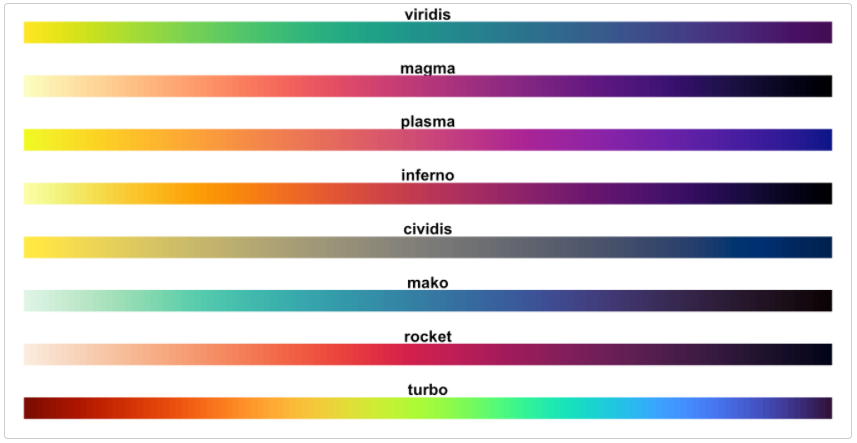
source: viridis Dokumentation
7.2 ggplot2 - Einführung
ggplot2 ist ein Paket zur graphischen Darstellung in R, das auf dem Buch “The Grammar of Graphics” von Leland Wilkinson basiert. Wie bei dplyr ist die Codestruktur an Grammatik orientiert und somit einfach nachzuvollziehen. Ablauf der Graphikerstellung in ggplot2 lässt sich wie folgend zusammenfassen:
Daten bereitstellen
Wie werden Variablen in der Graphik in Ästhetik umgewandelt? -
aesthetics()- Was ist die x-Achse, was die y-Achse?
- Wonach wird farbkodiert?
- …
Welche graphische Darstellung?
- Scatterplot -
geom_point() - Histogram -
geom_histogram() - Linienplot -
geom_line() - …
- Scatterplot -
Ggf. weitere Details definieren, wie z.B. die Achsenlabel
Um eine Graphik zu “bauen” kann man also dieser Struktur folgen:
ggplot(data = DATA, aes(MAPPINGS)) +
GEOM_FUNCTION (mapping = aes(MAPPINGS), position = POSITION) +
LABEL_FUNCTION +
THEME_FUNCTION +
COORDINATE_FUNCTION +
SCALE_FUNCTION +
FACET_FUNCTION
Dabei sind DATA, MAPPINGS und GEOM_FUNCTION notwendig, während der Rest nicht notwendig ist, da es gute Standardeinstellungen gibt.
Vorsicht: In ggplot2 sind Lagen mit + verknüpft und nicht mit %>%!
source: ggplot2 Cheat Sheet
7.3 Vor der Visualisierung: Die Daten
Das Kapitel arbeitet mit einem Datensatz, der die Superhelden von Marvel und DC miteinander vergleicht. Die Daten finden sich auf GitHub (“https://github.com/cosmoduende/r-marvel-vs-dc”), sind aber auf zwei Files aufgeteilt, die erst einzeln geladen und dann zusammengeführt werden müssen.
Erst werden die zwei Files von GitHub heruntergeladen und den Variablen MarvelCharacters und MarvelStats zugewiesen. Dabei werden fehlende Werte als NA kodiert:
# Lade Daten aus zwei unterschiedlichen Files
MarvelCharacters <- read_csv("https://raw.github.com/cosmoduende/r-marvel-vs-dc/main/dataset_shdb/heroesInformation.csv",
na = c("-", "-99.0"))## Warning: One or more parsing issues, see `problems()` for
## detailsMarvelStats <- read_csv("https://raw.github.com/cosmoduende/r-marvel-vs-dc/main/dataset_shdb/charactersStats.csv")Dann werden nur die Charaktere aus Marvel und DC ausgewählt und die MarvelCharactersDaten werden vorbearbeitet:
# Preprocessing der Daten `MarvelCharacters`
marvelDcInfo <- MarvelCharacters %>%
rename(Name = name) %>% # `name` -> `Name`
filter(Publisher == "Marvel Comics" | # nur Marvel oder...
Publisher == "DC Comics") %>% # ... DC
filter(!duplicated(Name)) %>% # Duplikate löschen
# nur bestimmte Spalten (es gibt z.B. auch Augenfarbe)
select(Name, Gender, Race, Publisher, Weight, Height) Dann werden die beiden Datensätze zusammengefügt:
# Zusammenführen der beiden Datensätze
MarvelDC <- inner_join(marvelDcInfo, MarvelStats, by = "Name")
# einige Zeilen sind falsch kodiert und enthalten eine andere Skala,
# deswegen werden alle Zeilen mit Intelligence = 1 ausgeschlossen.
MarvelDC<- MarvelDC %>%
filter(Intelligence > 1) Damit ist der Datensatz MarvelDC entstanden, mit dem wir weiterarbeiten können!
Um ggplot Daten zu geben, kann man sie entweder in den Klammern definieren:
ggplot(data = MarvelDC) # "data = " kann auch weggelassen werdenOder man gibt sie via Pipeline an ggplot weiter - beides ist äquivalent:
MarvelDC %>%
ggplot()Dieser Code funktioniert allerdings noch nicht, da wir bisher nur die Daten definiert haben, aber noch keine MAPPINGS und auch keine GEOM_FUNCTION - die beiden anderen erforderlichen Angaben.
7.4 Ästhetische Mapping
Das ästhetische Mapping (aesthetics) kann entweder direkt in ggplot definiert werden, dann gilt es für alle weiteren Schritte, oder es kann in der jeweiligen graphischen Funktion definiert werden, dann gilt es nur für diese geom_* Funktion.
aesthetics |
Bedeutung |
|---|---|
| x | Welche Variable soll auf die x-Achse? |
| y | Welche Variable soll auf die y-Achse? |
| shape | Nach den Werten welcher Variable soll die Form vergeben werden? |
| color | Nach den Werten welcher Variable soll die Farbe vergeben werden? |
| fill | Nach den Werten welcher Variable soll die Füllfarbe vergeben werden? |
aesthetics in ggplot() werden an alle geom_* weitergegeben. aesthetics in geom_* sind spezifisch für diese graphische Funktion (und können geerbte Werte überschreiben).
Hier ein Beispiel, das sich wie folgend liest: “Nehme MarvelDC als Daten. Die x-Achse soll Publisher sein und die y-Achse Combat. Stelle das in einem Boxplot dar.”
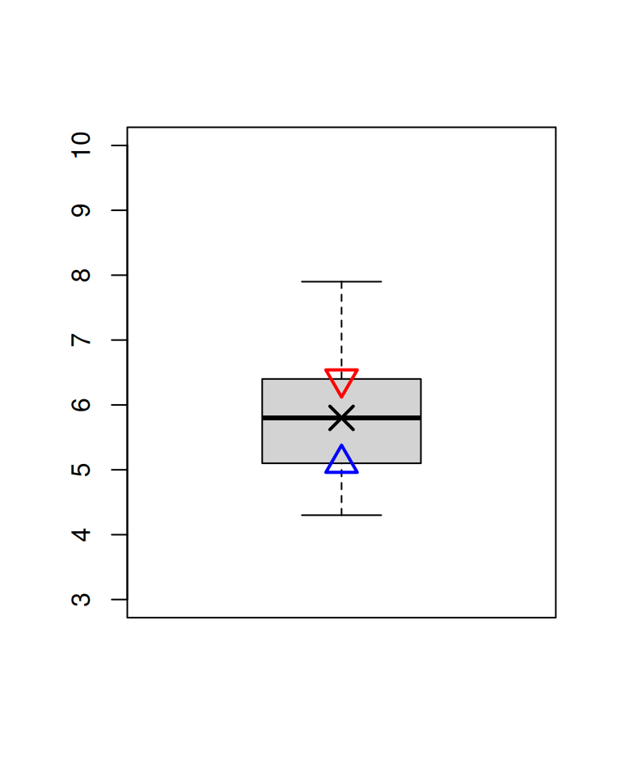
Um eine farbliche Trennung nach Geschlecht zu haben, kann das Beispiel erweitert werden: “Nehme MarvelDC als Daten. Die x-Achse soll Publisher sein und die y-Achse Combat. Stelle das in einem Boxplot dar. Wähle unterschiedliche Farben für Gender und fülle die Plots damit.”
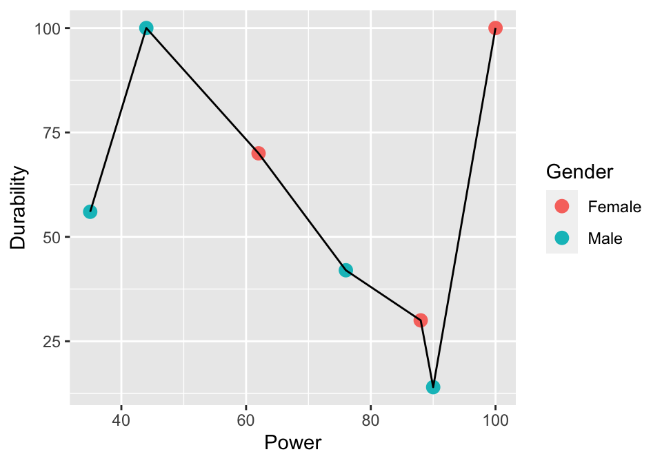
7.5 Graphischen Funktionen
Mit den graphischen Funktionen (geom_*) gibt man an, welche Art der graphischen Darstellung man will. Beispiele sind:
aesthetics |
Anzahl Variablen: | x ist dabei: | y ist dabei: |
|---|---|---|---|
geom_bar() |
1 | diskret | - |
geom_histogram() |
1 | kontinuierlich | - |
geom_qq() |
1 | kontinuierlich | - |
geom_boxplot() |
2 | diskret | kontinuierlich |
geom_violin() |
2 | diskret | kontinuierlich |
geom_point() |
2 | kontinuierlich | kontinuierlich |
geom_smooth() |
2 | kontinuierlich | kontinuierlich |
source: ggplot2 Cheat Sheet
7.5.1 Säulen- und Balkendiagramm
geom_bar ist eine graphische Funktion um Häufigkeiten einer diskreten Variable in einem Säulen- oder Balkendiagramm zu visualisieren.
ggplot(data = MarvelDC, # Nehme Daten MarcelDC
aes(x = Publisher)) + # auf der x-Achse soll Publisher sein
geom_bar() # stelle in einem Barplot dar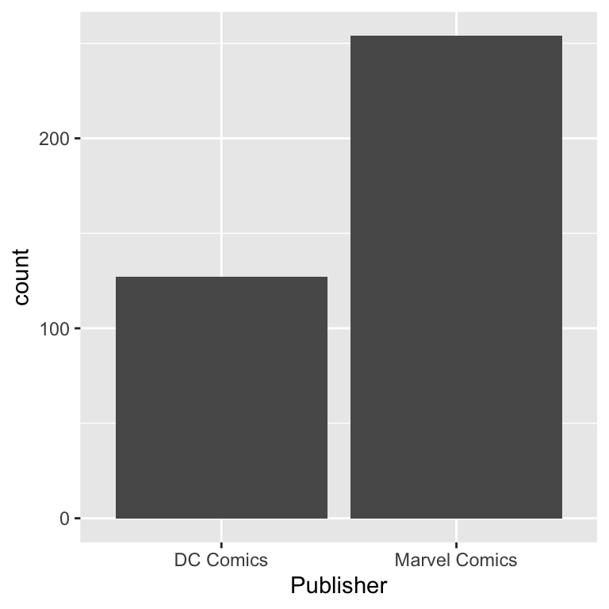
Marvel hat doppelt soviele Superhelden wie DC! Will man wissen, wie viele es genau sind, kann man mithilfe eines Graphik-Labels die Zählung hinzufügen:
ggplot(data = MarvelDC,
aes(x = Publisher)) +
geom_bar() +
# man kann Label mithilfe der graphischen Funktion
# geom_label und der Statistik "zählen" hinzufügen
geom_label(stat = "count",
aes(label = ..count..)) 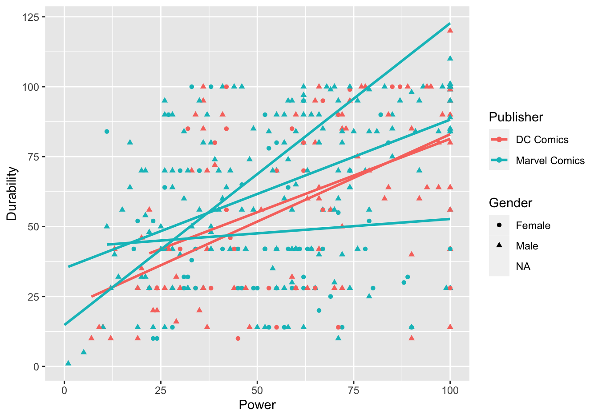
Indem man eine Farbkodierung vergibt, kann man in diesem Säulendiagramm das Geschlechterverhältnis beurteilen. Da hier mit Farben gefüllt wird, ist das Argument fill.
ggplot(data = MarvelDC,
aes(x = Publisher,
fill = Gender)) + # vergebe Füllfarbe nach Geschlecht
geom_bar() 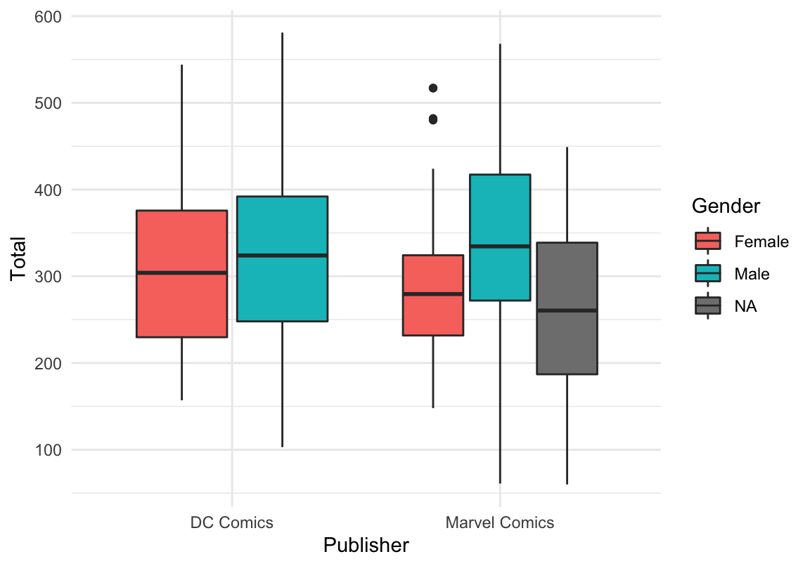
In der Graphik oben wurde der default-Parameter für Position verwendet, weil nichts anderes definiert wurde. Das ist stack. Bei stackwerden die Teile übereinander “gestapelt” dargestellt. Da weit mehr Charaktere aus Marvel stammen, kann die Position fill dafür sorgen, dass man das Geschlechterverhältnis besser beurteilen kann. fill erstellt Balken gleicher Länge, sodass eine Beurteilung der relativen Anteile leichter fällt. Erst sollten allerdings die NA Fälle herausgenommen werden, damit es bei Marvel und DC je nur zwei Kategorien gibt.
MarvelDC %>%
filter(!is.na(Gender)) %>% # Schließe Gender=NA aus
ggplot(aes(x = Publisher,
fill = Gender)) +
geom_bar(position = "fill") # mache alle Balken gleich lang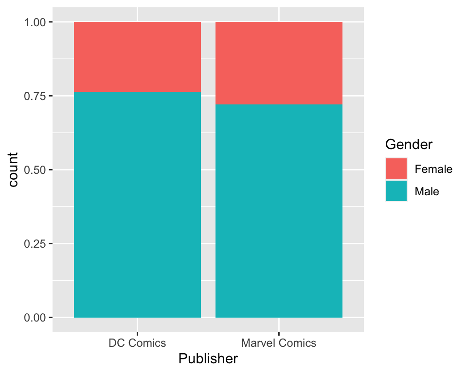
Die x oder y Angabe entscheidet darüber, ob ein Säulen- oder Balkendiagramm entsteht. Oben wurden die Daten als x an die Funktion gegeben und ein Säulendiagramm ist entstanden. Werden die Daten als y angegeben, so entsteht ein Balkendiagramm:
MarvelDC %>%
filter(!is.na(Gender)) %>%
ggplot(aes(y = Publisher, # auf der y-Achse soll Publisher sein
fill = Gender)) +
geom_bar(position = "fill")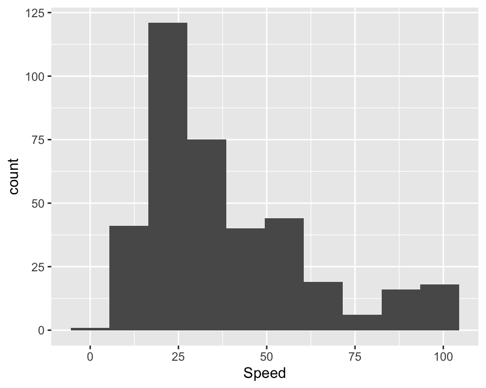
Dieselbe Information kann auch in Kreisform dargestellt werden, in sogenannten Polarkoordinaten:
MarvelDC %>%
filter(!is.na(Gender)) %>%
ggplot(aes(y = Publisher,
fill = Gender)) +
geom_bar(position = "fill") +
coord_polar() # stelle das in Polarkoordinaten dar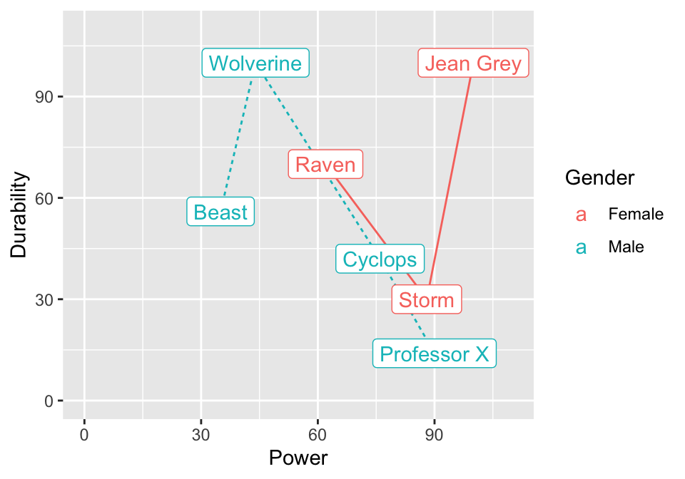
Hier sieht man, dass bei DC Comics nur weniger als ein Viertel aller Helden weiblich sind, während es bei Marvel etwas mehr als ein Viertel sind.
7.5.2 Histogramm
geom_histogram ist eine graphische Funktion um Häufigkeiten einer kontinuierlichen Variable zu visualisieren. Beispielsweise kann man schauen, wie schnell die Superhelden unterwegs sind:
ggplot(MarvelDC,
aes(x = Speed)) + # auf der x-Achse soll Speed sein
geom_histogram( # stelle das in einem Histogramm dar
bins = 10) # Anzahl der Kategorien soll 10 seinUnterscheidet sich die Geschwindigkeit der Helden zwischen Marvel und DC?
ggplot(MarvelDC,
aes(x = Speed,
fill = Publisher)) +
geom_histogram(bins = 10,
alpha = 0.7, # "Durchsichtigkeit" bei 70%
position = "dodge") # Position Balken: nebeneinander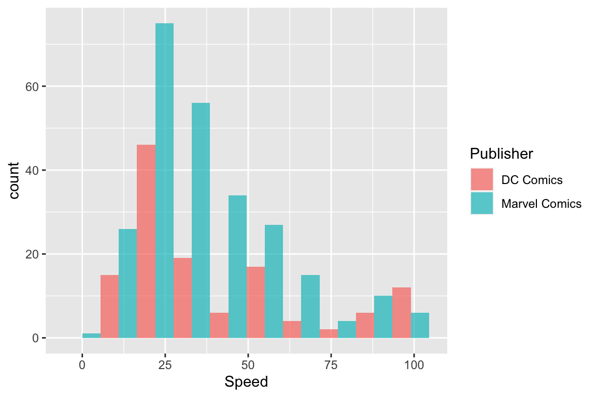
Offensichtlich nicht, die Verteilungen sind sich relativ ähnlich.
Bei Speed fällt allerdings direkt auf, dass es nicht sehr normalverteilt aussieht. Ein Histogramm lässt hier einen ersten Eindruck zu, aber eine visuelle Prüfung der Normalverteilung sollte lieber über einen qq-Plot vorgenommen werden.
7.5.3 QQ-Plot
Bei einem qq-Plot kann und muss man Punkte und Vergleichslinie getrennt definieren:
ggplot(MarvelDC,
aes(sample = Speed)) + # erstelle Quantile von: Speed
geom_qq() + # erstelle QQ-Plot Punkte
geom_qq_line() # erstelle QQ-Plot Vergleichslinie
Bei Speed zeigen sich deutliche Abweichungen von einer Normalverteilung. Das gilt auch für alle anderen Eigenschaften (hier nicht gezeigt). Nur der Summenscore, Total, zeigt im qq-Plot eine Verteilung nahe der Normalverteilung:
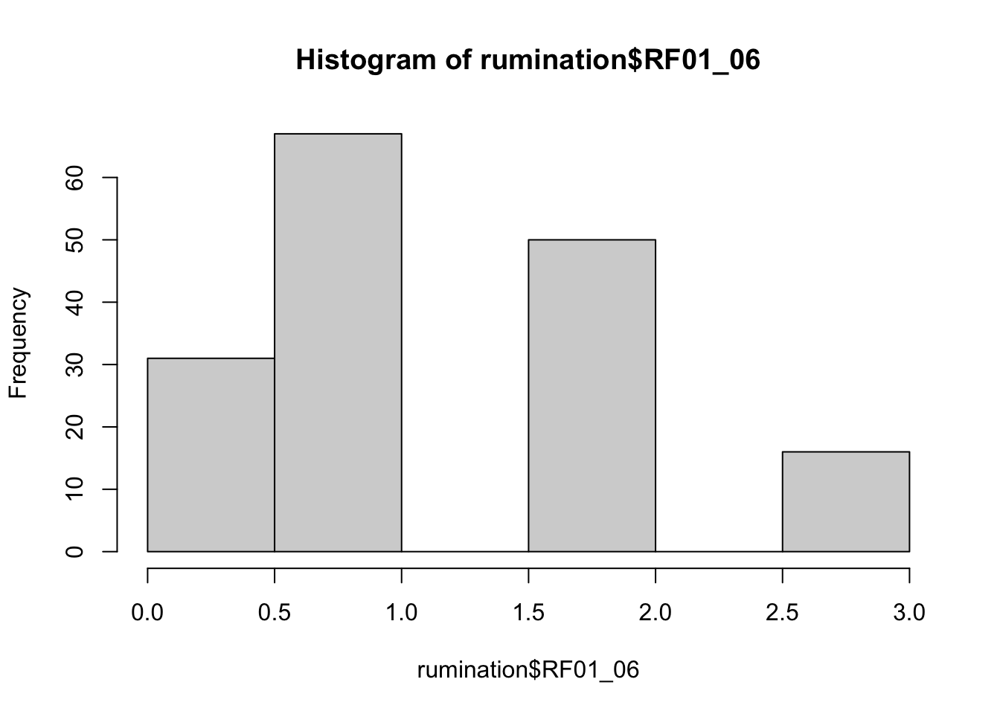
7.5.4 Boxplot
geom_boxplotist eine graphische Funktion um kontinuierliche Verteilungen getrennt nach einer diskreten Gruppierung darzustellen. Hat Marvel oder DC die stärkeren Superhelden? - Dafür betrachten wir den Total Wert jedes Helden.
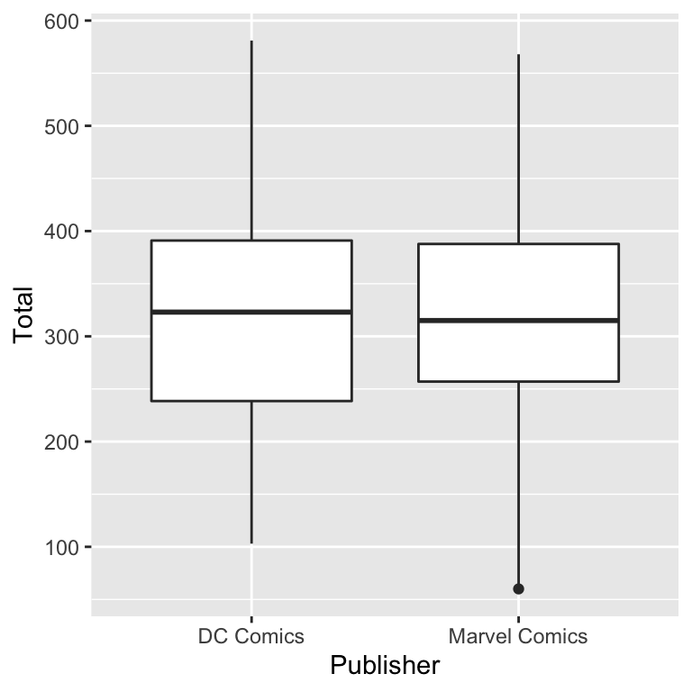
Auf den ersten Blick mithilfe eines Boxplots gibt es keine Unterschiede zwischen Marvel Comics und DC Comics.
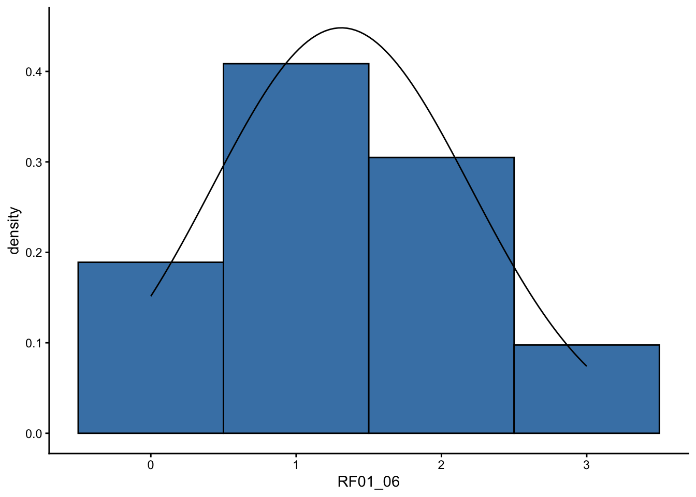
Betrachtet man Total aufgespalten nach Geschlecht, so scheint Marvel etwas stärkere Männer und schwächere Frauen zu haben - allerdings sind die Unterschiede so gering, dass es sich wahrscheinlich um zufällige Schwankungen und nicht um belastbare Effekte handelt! Keins der Universen scheint also dem anderen überlegen zu sein.
7.5.5 Violinen-Plot
geom_violin ist ebenfalls eine graphische Funktion um kontinuierliche Verteilungen getrennt nach einer diskreten Gruppierung darzustellen - und lässt etwas mehr Aufschluss auf die Daten zu (z.B. wie die grobe Verteilung der Werte ist).
ggplot(MarvelDC,
aes(x = Publisher, y = Total,
fill= Gender)) +
geom_violin( # stelle in einem Violinenplot dar
trim=FALSE) # schneide Spitzen nicht ab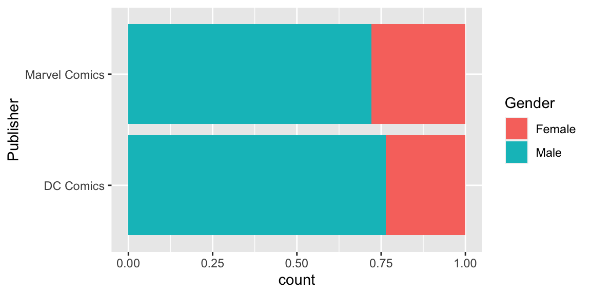
7.5.6 Beeswarm Plot mit dem Paket ggbeeswarm
Das package ggbeeswarm bietet eine ähnliche Darstellung durch die graphische Funktion geom_quasirandom:
library(ggbeeswarm)
MarvelDC %>%
filter(!is.na(Gender)) %>%
ggplot(aes(y = Total, x = Publisher,
colour = Gender)) +
geom_quasirandom(dodge.width = 1) # stelle als beeswarm dar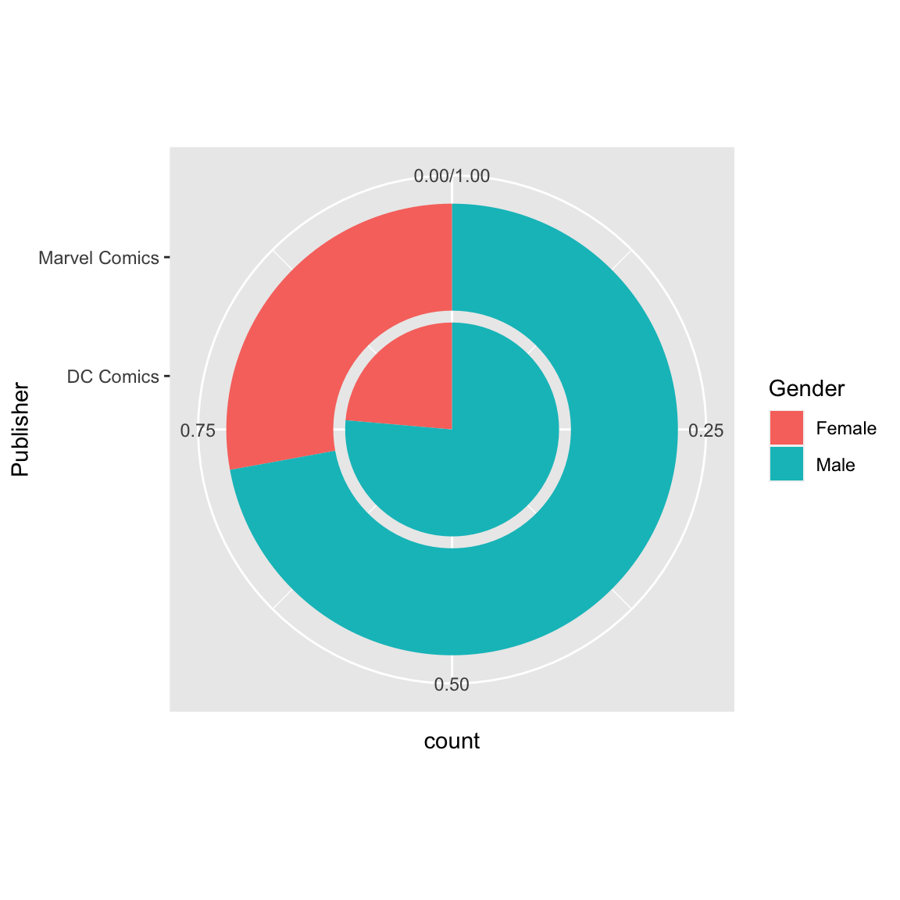
Weder Violinen-Plot noch Beeswarm-Plot deuten darauf hin, dass Marvels Superhelden stärker und cooler sind, als die von DC. Ohne gegenteilige Hinweise bleibt es also bei der Annahme, dass beide Universen gleich gut sind.
7.5.7 Scatterplot
Ein Scatterplot mit geom_point stellt die Daten als Punkte im Raum zweier kontinuierlicher Variablen dar. Beispielsweise kann man Power und Durability aller Helden gegeneinander darstellen:
Auch diese Graphik kann einfach nach Publisherfarblich kodiert werden. Hier sollen die Punkte Farbe haben, aber es wird nichts mit Farbe gefüllt, deswegen ist das Argument hier color:
ggplot(data = MarvelDC,
aes(x = Power, y = Durability,
color = Publisher)) + # getrennte Farben für Publisher
geom_point() 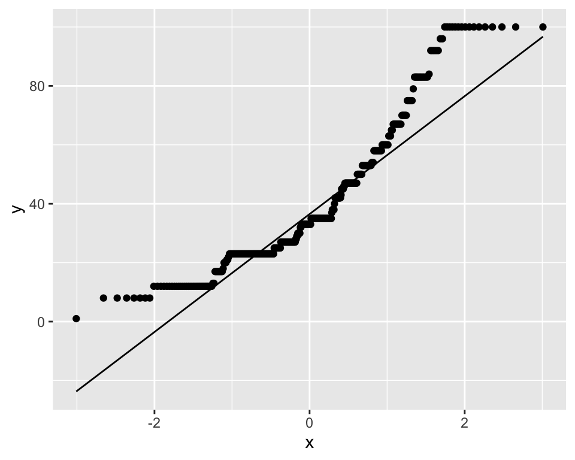
Die Daten beider Publishersind weit verteilt, es ist also keineswegs so, dass DCs Superhelden weniger Powerhaben, als die von Marvel.
Will man zusätzlich nach Geschlecht unterscheiden, so geht das beispielsweise über die Form der Punkte mithilfe des Arguments shape:
ggplot(data = MarvelDC,
aes(x = Power, y = Durability,
color = Publisher,
shape = Gender)) + # getrennte Formen für Gender
geom_point() 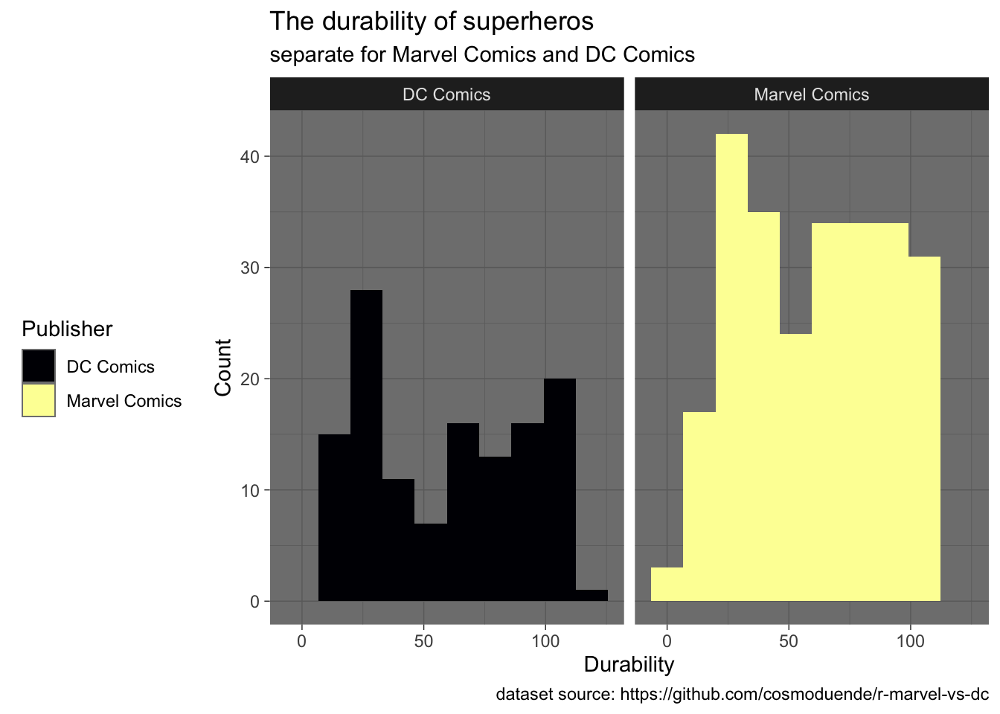
7.5.8 (Linearer) Fit
Die Power und DurabilityDaten können mit einer Funktion gefittet werden. So kann man visuell prüfen, ob es bei Marvel und DC jeweils einen anderen Zusammenhang zwischen Powerund Durabilitygibt. Dafür wird die graphischen Funktion geom_smooth verwendet. Um ein lineares Modell zu erhalten, muss das Argument method = "lm" für “linear model” gesetzt werden. Um y durch x vorherzusagen, braucht es die Formel y ~ x:
ggplot(data = MarvelDC,
aes(x = Power, y = Durability,
color = Publisher,
shape = Gender)) +
geom_point() +
geom_smooth(method = "lm", # lineares Modell
formula = 'y ~ x', # y durch x vorhersagen
se = FALSE) # keine Fehlerbalken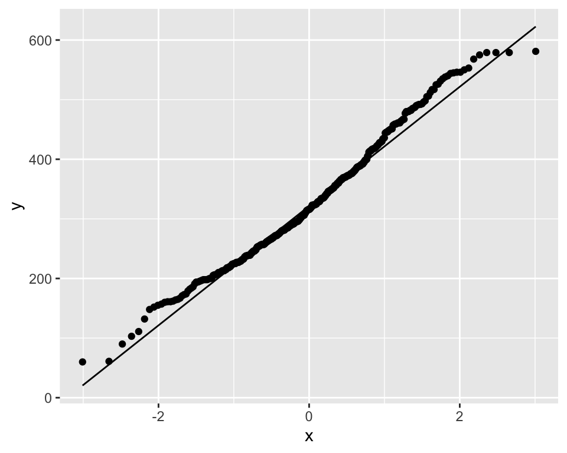
Das sind aber 5 Fits - je für Geschlecht und Publisher. Nicht nur für die beiden Publisher wie geplant.
Das liegt daran, dass sowohl Farbe als auch Form innerhalb von ggplotbei den allgemeinen aesthetics definiert sind. Um nur einen linearen Fit für jeden Publisher zu erhalten, nicht aber nach Geschlecht aufgespalten, muss man die Form-Kennung für Geschlecht nur an geom_point geben. Auf diese Weise kann sie nicht mehr an geom_smooth weitergegeben werden. Gibt man die Farb-Kennung für Publisher nur an die Linien, also nur an geom_smooth, so erhält man nur eine farbliche Trennung bei den Fit-Linien, nicht aber bei den zugrunde liegenden Punkten. Mit se=TRUE werden die Fehlerintervalle um die linearen Fit-Funktionen herum dargestellt. Der folgende Code liefert einen linearen Fit der Power und Durabilityder Superhelden farblich getrennt nach Marvel und DC:
ggplot(data = MarvelDC,
aes(x = Power, y = Durability)) +
geom_point(aes(shape = Gender)) + # Form gilt nur für Punkte
geom_smooth(aes(color = Publisher), # Farbe gilt nur für Linien
method = "lm",
formula = 'y ~ x',
se = TRUE) 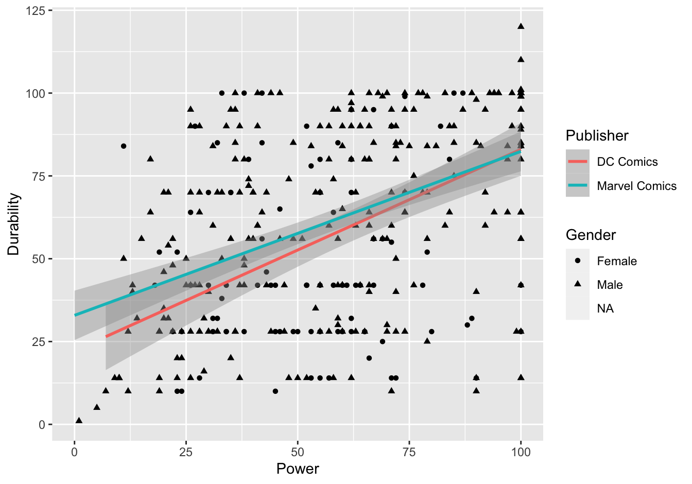
Auch hier zeigen sich weiterhin keine Unterschiede zwischen den Publishern. Es muss wohl endgültig davon ausgegangen werden, dass Marvel nicht das alleinige Recht auf coole Superhelden hat. Unsere Daten geben keine Hinweise auf die Überlegenheit des einen oder anderen Superhelden-Universums.
7.5.9 Linienplot
Linienplots lassen sich am besten an einer überschaubaren Anzahl Punkte veranschaulichen, z.B. eignet sich eine Auswahl der X-Men. Die Datenpunkte werden farblich nach Geschlecht getrennt - dann werden alle Punkte durch eine Linie verbunden:
# Erstelle Vektor der X-Men Charaktere:
XMen <- c("Wolverine", "Jean Grey", "Storm", "Beast",
"Cyclops", "Professor X", "Raven")
MarvelDC %>%
filter(Name %in% XMen) %>% # Verwende nur X-Men
ggplot(aes(x = Power,
y = Durability)) +
geom_point( # stelle in Scatterplot dar
aes(color = Gender), # Farbe nach Gender (Punkte)
size = 3) + # Punkte sollen Größe 3 haben
geom_line() # verbinde Punkte mit Linie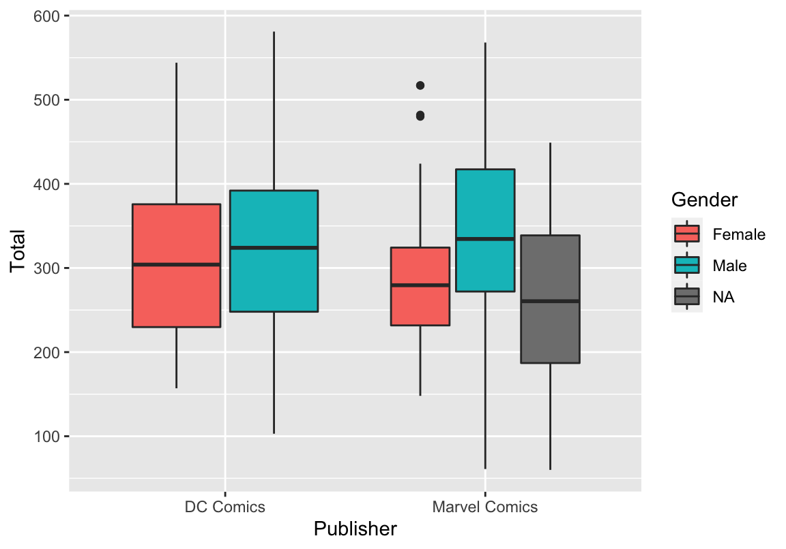
Da Farbe innerhalb von geom_point definiert ist, enthalten die allgemeinen aestheticskeine Gruppierung. Deswegen verbindet die Linie einfach alle Datenpunkte. Informativer ist es natürlich, getrennte Linien für die Geschlechter zu haben. Dazu muss die Farbdefinition in den allgemeinen aestheticserfolgen und nicht innerhalb von geom_point:
XMen <- c("Wolverine", "Jean Grey", "Storm", "Beast",
"Cyclops", "Professor X", "Raven")
MarvelDC %>%
filter(Name %in% XMen) %>%
ggplot(aes(x = Power,
y = Durability,
color = Gender)) + # Farbe nach Gender (Punkte & Linie)
geom_point(size = 3) +
geom_line(aes(linetype = Gender)) # zusätzlich Linentyp nach Gender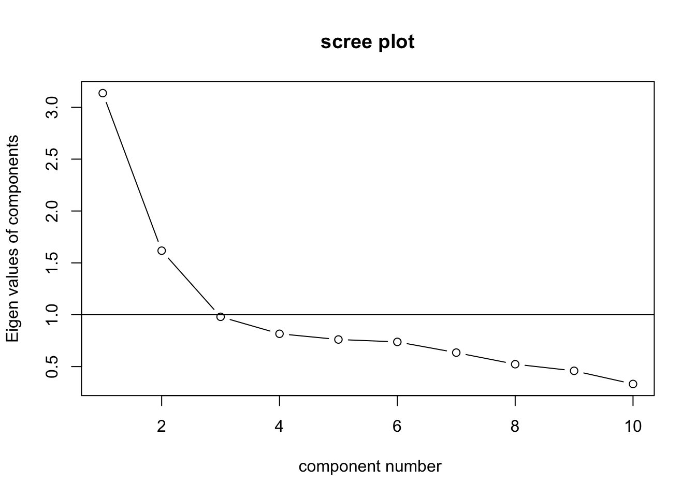
Will man wissen, welcher Charakter welche Werte aufweist, fügt geom_label Textlabel zu dem Plot hinzu. Außerdem können die Achsen so skaliert werden, dass der absolute Null Punkt enthalten ist und beide Achsen symmetrisch laufen:
XMen <- c("Wolverine", "Jean Grey", "Storm", "Beast",
"Cyclops", "Professor X", "Raven")
MarvelDC %>%
filter(Name %in% XMen) %>%
ggplot(aes(x = Power,
y = Durability,
color = Gender)) +
geom_point(size = 3) +
geom_line(aes(linetype = Gender)) +
geom_label(aes(label = Name, # Füge Label hinzu mit: "Name"
color = Gender)) + # färbe Labels nach Geschlecht
xlim(c(0, 110))+ # x-Achse soll laufen von 0-110
ylim(c(0, 110)) # y-Achse soll laufen von 0-1107.6 Sonstige Funktionalität
7.6.1 Labels
Label sind die wahrscheinlich wichtigste zusätzliche Funktionalität, die fast immer benötigt wird, um einen Plot allgemein verständlich zu machen. Mithilfe von labs() können Titel, Untertitel, Achsenbeschriftungen und eine Caption zu einem Plot hinzugefügt werden. Z.B. für den Plot der X-Men:
XMen <- c("Wolverine", "Jean Grey", "Storm", "Beast",
"Cyclops", "Professor X", "Raven")
MarvelDC %>%
filter(Name %in% XMen) %>%
ggplot(aes(x = Power,
y = Durability,
color = Gender)) +
geom_point(size = 3) +
geom_line(aes(linetype = Gender)) +
geom_label(aes(label = Name,
color = Gender)) +
xlim(c(0, 110)) +
ylim(c(0, 110)) +
# Füge Beschriftungen hinzu: Titel, x- & y-Achsen, Caption
labs(title = "Power and durability of the X-Men",
x = "Power",
y = "Durability",
caption = "dataset source: https://github.com/cosmoduende/r-marvel-vs-dc" )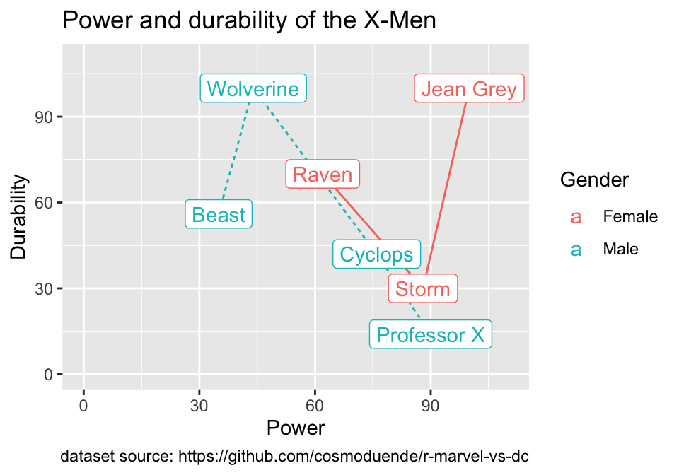
Ein weiteres Beispiel:
ggplot(MarvelDC,
aes(x = Publisher, y = Total,
fill= Gender)) +
geom_boxplot() +
labs(title = "Total skills of Marvel and DC superheros",
subtitle = "Separate for their gender",
x = "Publisher",
y = "Total skills",
caption = "dataset source: https://github.com/cosmoduende/r-marvel-vs-dc" )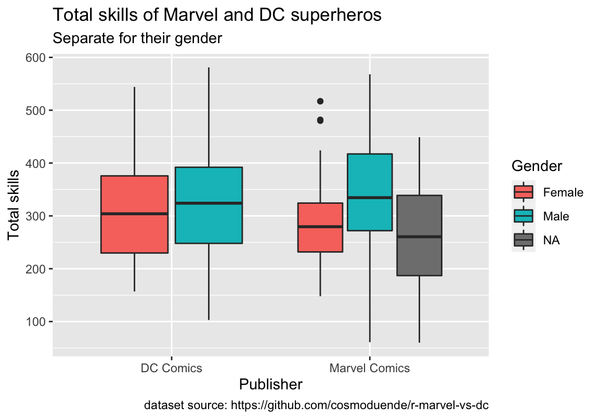
7.6.2 Thema
Es gibt verschiedene themes die das grundlegende Graphiklayout bestimmen.
theme_bw()- weißer Hintergrund mit grid Linientheme_gray()- grauer Hintergrund mit hellen grid Linien (default)theme_dark()- dunkler Hintergrund mit grid Linientheme_minimal()- minimalesthemetheme_void()- leerestheme
Minimalistisches Thema:
ggplot(MarvelDC,
aes(x = Publisher, y = Total,
fill= Gender)) +
geom_boxplot() +
theme_minimal() # verwende Thema: Minimal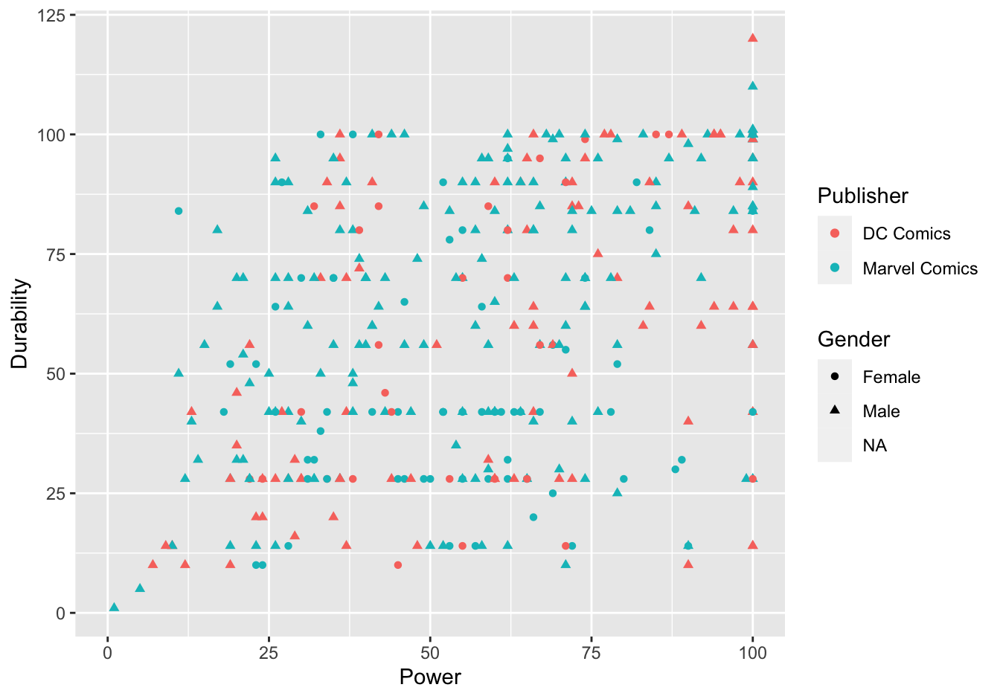
Dunkles Thema:
ggplot(MarvelDC, aes(x = Publisher, y = Total, fill= Gender)) +
geom_boxplot() +
theme_dark() # verwende Thema: Dunkel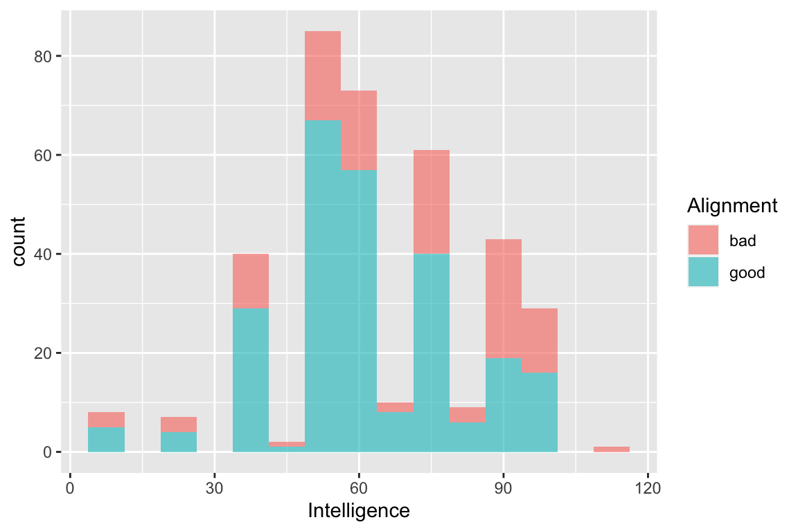
7.6.3 Position
Mit position kann die Positionierung graphischer Elemente zueinander eingestellt werden. Positionsarten sind z.B.:
identity- wahre Werte an wahrer Position, hier kann man Plots z.B. durch den alpha Parameter entzerrenstack- Elemente aufeinander schichten (default)dodge- Elemente nebeneinander zeigenjitter- Zufälliges Rauschen auf die (x,y) Positions jedes Elements addieren um den Plot zu entzerren
dodge = nebeneinander:
MarvelDC %>%
filter(!is.na(Alignment), # verwende nur Alignments...
Alignment != "neutral") %>% # ... `good` und `bad`
ggplot(aes(x = Intelligence,
fill = Alignment)) +
geom_histogram(bins = 15,
alpha = 0.6,
position = "dodge") # Position: nebeneinanderstack = aufeinander:
MarvelDC %>%
filter(!is.na(Alignment),
Alignment != "neutral") %>%
ggplot(aes(x = Intelligence,
fill = Alignment)) +
geom_histogram(bins = 15,
alpha = 0.6,
position = "stack") # Position: aufeinander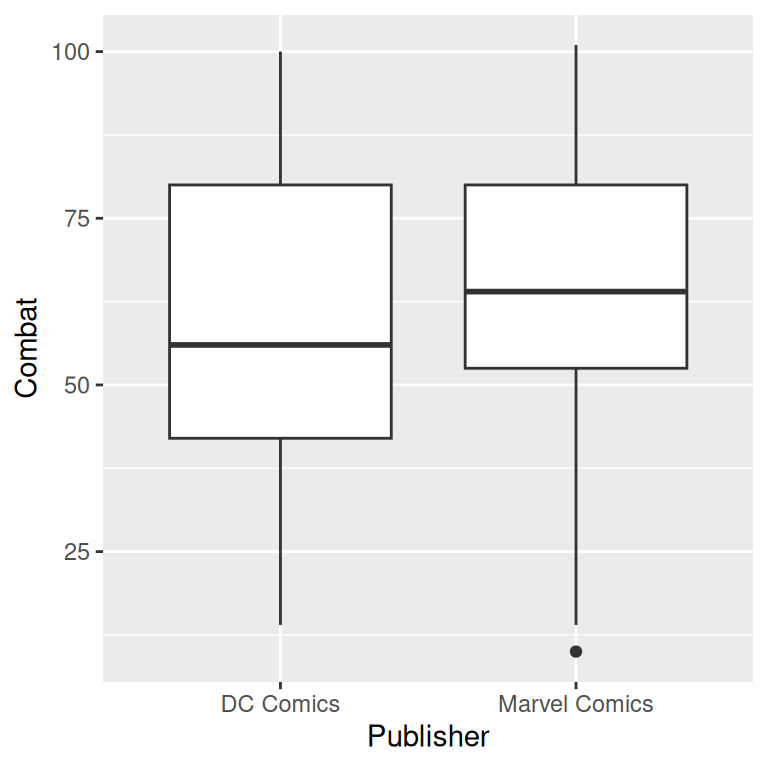
identity = hintereinander:
MarvelDC %>%
filter(!is.na(Alignment),
Alignment != "neutral") %>%
ggplot(aes(x = Intelligence,
fill = Alignment)) +
geom_histogram(bins = 15,
alpha = 0.6,
position = "identity") # Position: hintereinander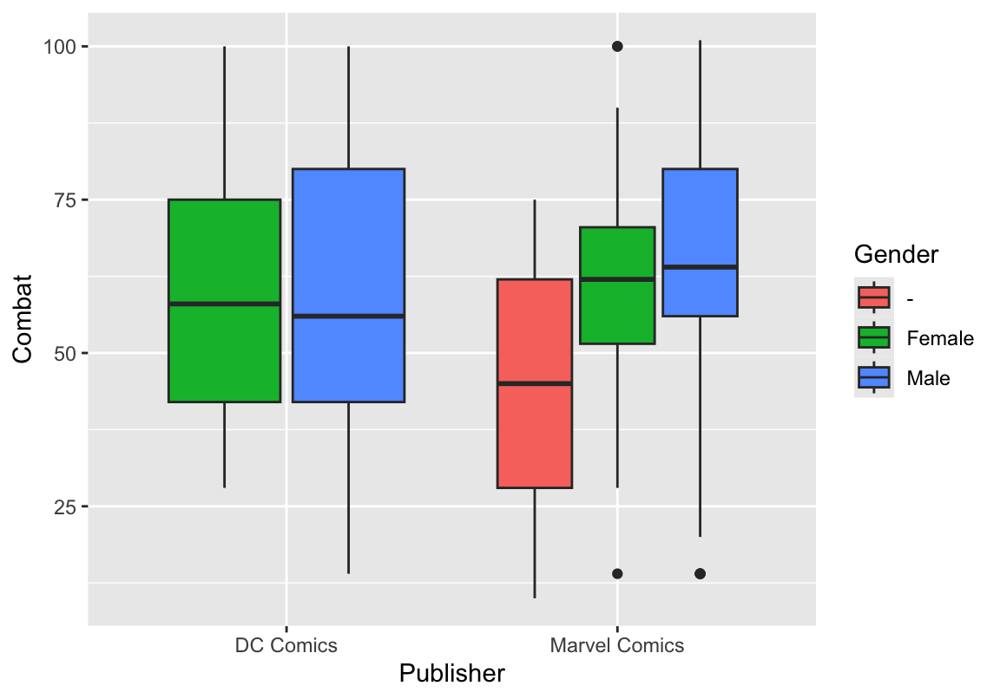
7.6.4 Legenden
Die Legende wird von ggplot automatisch erstellt und kann einfach an die Positionen bottom, right, left und top gelegt werden:
ggplot(MarvelDC, aes(x = Publisher, y = Total,
fill= Gender)) +
geom_boxplot() +
theme_minimal() +
labs(title = "Total skills of Marvel and DC superheros",
subtitle = "Separate for their gender",
x = "Publisher",
y = "Total skills",
caption = "dataset source: https://github.com/cosmoduende/r-marvel-vs-dc" ) +
theme(legend.position="top") # positioniere Legende oben7.6.5 Koordinatensysteme
Das wichtigste Koordinatensystem ist zweifellos das kartesische. In R kann man aber z.B. auch Polarkoordinaten verwenden, oder das kartesische System “drehen”:
coord_flip- dreht ein kartesisches Koordinatensystem um (x wird zu y und umgekehrt) - empfohlen ist allerdings, das über die Definition von x und y direkt zu lösen.coord_polar- Polarkoordinaten
Polarkoordinaten wurden bereits beim Balkendiagramm gezeigt.
7.6.6 Farbskalen
scale bestimmt auf welche Farbskala die Daten abgebildet werden. Am Beispiel von viridis:
scale_color_viridis_d()- diskretes viridis Spektrum für das Argumentcolorscale_color_viridis_c()- kontinuierliches viridis Spektrum für das Argumentcolorscale_fill_viridis_d()- diskretes viridis Spektrum für das Argumentfill
Über option kann im Paket viridis auf eine andere der enthaltenen Skalen zugegriffen werden:
scale_fill_viridis_d(option=inferno)- diskretes inferno Spektrum für das Argumentfill
Neben dem viridis Package gibt es auch den ColorBrewer in R, der unter anderem folgende Farbkarten kennt (am Beispiel von fill Skalen):
scale_fill_brewer(palette="Set1")andere mögliche Einstellungen fürpalette:"Set2", "Set3", "Accent", "Dark2", "Pastel1", "Pastel2"
Wenn man allerdings schon ein Farbspektrum selbst definiert, ist es empfehlenswert ein colorblind friendly Schema wie alle Skalen aus dem viridis Package zu benutzen.
Im folgenden Beispiel werden verschiedene Einstellungen zusammengeführt um eine ansprechende und informative Graphik zu erhalten. Erst wird eine Liste der besten Superhelden der X-Men, der Avengers und der Guardians of the Galaxy erstellt. Dann veranschaulicht ein Balkendiagramm welcher Art sie angehören. Also ob es Menschen sind, oder Mutanten, oder Androiden… Dann wird die Graphik informativ beschriftet, so dass sie auch ohne den zugehörigen Code verständlich ist, und als letztes wird ein diskretes viridis Spektrumals die Farbskala bestimmt, die R verwenden soll:
# Charaktere der X-Men, der Guardians of the Galaxy und der Avengers
XMen <- c("Wolverine", "Jean Grey", "Storm", "Beast",
"Cyclops", "Professor X", "Raven")
GoG <- c("Groot", "Quill", "Rocket Raccoon")
Avengers <- c("Iron Man", "Captain America", "Black Widow",
"Hulk", "Hawkeye", "Thor", "Spiderman", "Vision")
# ein Vektor mit den coolsten Superhelden
BestHeros <- c(XMen, GoG, Avengers)
MarvelDC %>%
filter(Name %in% BestHeros) %>% # Nur Charaktere aus 'BestHeros'
ggplot(aes(y = Race, # y soll 'Race' sein
fill= Race)) + # vergebe Füllfarbe nach 'Race'
geom_bar() + # stelle als Balken dar
theme_bw() + # in scharz-weißem Thema
# Beschrifte
labs(title = "Races of superheros",
subtitle = "X-Men, Avengers and Guardians of the Galaxy",
x = "Count",
y = "",
caption = "dataset source: https://github.com/cosmoduende/r-marvel-vs-dc" ) +
scale_fill_viridis_d() # verwende Farben aus viridis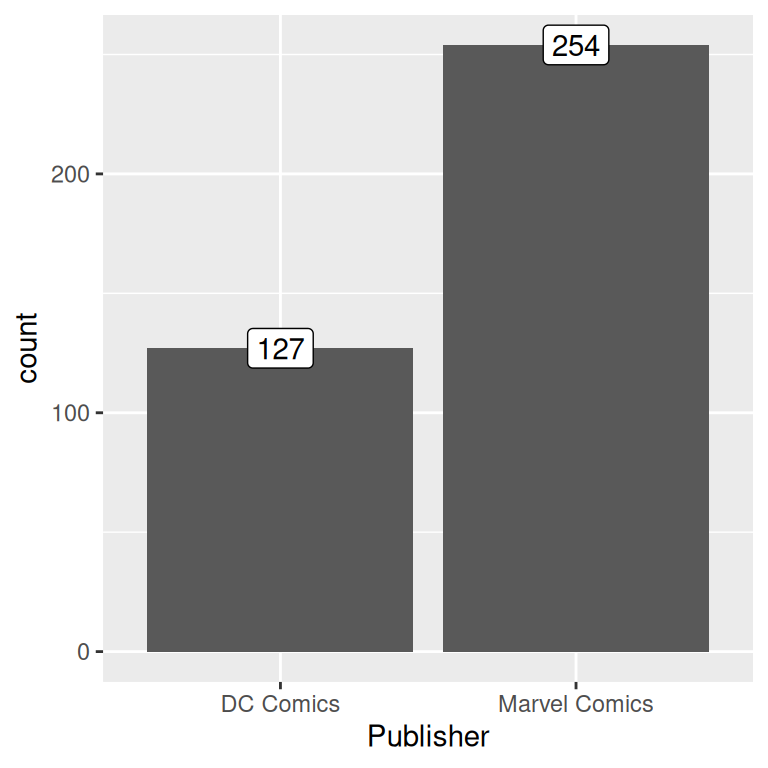
7.6.7 Variablenskalen
Mit ggplot2 können Variablen einfach auf unterschiedliche Skalen übertragen werden. Diese Funktionalität kann mit x oder y verwendet werden, z.B.:
scale_x_log10()scale_x_sqrt()scale_x_reverse()
7.7 Facetten
Facettierung bedeutet, dass ein Plot in mehrere Plots aufgespalten wird, abhängig von den Werten einer oder mehrerer diskreter Variablen. Der einfachste Weg geht über facet_wrap(). Beispielsweise kann man das Balkendiagramm von oben, welches die Art der Superhelden zeigt, um die größten Gegner dieser Helden erweitern. Erst definiert man in einem Vektor, wer die größten Helden und Bösewichte sind. Dann facettiert man das Balkendiagramm nach Alignment, es werden also unterschiedliche Grids für die Guten und die Bösen erstellt:
# Gegner der X-Men, der Guardians of the Galaxy und der Avengers
VXMen <- c("Magneto", "Gambit", "Apocalypse", "Mystique")
VGoG <- c("Ronin", "Thanos")
VAvengers <- c("Loki", "Ultron", "Doctor Doom", "Galactus")
# ein Vektor mit den coolsten Superhelden und ihren größten Gegnern
HerosVillains <- c(BestHeros, VXMen, VGoG, VAvengers)
MarvelDC %>%
filter(Name %in% HerosVillains) %>% # Nur wenn in 'HerosVillains'
ggplot(aes(y = Race, # y soll 'Race' sein
fill= Race)) + # vergebe Füllfarbe nach 'Race'
geom_bar() + # stelle als Balken dar
theme_bw() + # in scharz-weißem Thema
# Beschrifte
labs(title = "Races of superheros and their villains",
subtitle = "X-Men, Avengers and Guardians of the Galaxy",
x = "Count",
y = "",
caption = "dataset source: https://github.com/cosmoduende/r-marvel-vs-dc" ) +
scale_fill_viridis_d() + # verwende Farben aus viridis
facet_wrap(~ Alignment) # trenne Grids nach 'Alignment'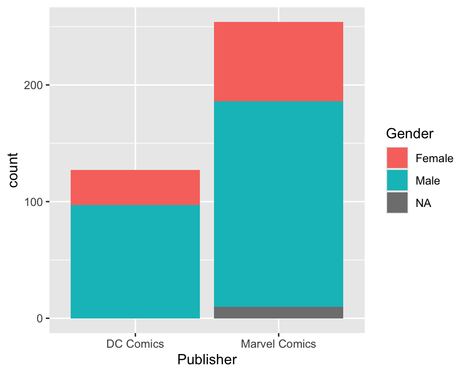
Dieser Plot enthält viele der sonstigen Funktionalitäten von ggplot2. Auch wenn es anfangs wie unnötige Arbeit erscheint: gerade die richtige Beschriftung eines Plots ist unerlässlich! Farbskala und Thema hingegen sind nett zu haben, aber nicht unbedingt ab der ersten Version eines Plots erforderlich.